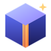

3DForge
Mesh Modeller
Version 0.4
Click to start
© 2026 by Dieter Meiller
Local
Orbit
Origin
Selection
Controls
View Objects Create : choose Box / Sphere / Cylinder / Tube, set its parameters in the panel, then click the ground or an object face to place it. The last created object is selected.Select : click an object in the view or in the object list (double-click a list entry to rename it). Use the gizmo to move / rotate / scale; the grid field sets the snap step (0 = continuous).Shortcuts File menu : import / export JSON (lossless), 3DS, OBJ, STL, glTF/GLB.
Close
Edit mode
Enter / leave: select an object, press Tab or click “Edit”. Esc clears the selection, a second Esc (or Tab) leaves edit mode.Sub-objects: 1 / 2 / 3 or the flyout: Vertices / Edges / Faces. Click selects, Shift+click toggles, A selects all. The gizmo moves, rotates or scales the selection.Vertices – Add: click a face or edge to insert a point (Enter toggles insert mode).Edges – Add: select exactly two points of the same face; Enter connects them with a new edge and splits the face.Faces – Add: Enter extrudes the selected faces.Remove (Del): deletes selected vertices, edges (merges the faces) or faces. Disabled while nothing is selected.Chamfer (B): bevels the selected edges; the width is set in the panel. Only edges between two faces are chamfered; faces with holes or interior points are rejected.Subdivide (Shift+D): refines the selected faces (and their mirrored counterparts) with Catmull-Clark subdivision. Only available in face mode with faces selected; the new faces stay selected so it can be repeated. Edges to unselected faces keep their shape.Mirror X / Y / Z (panel): repeats every edit on the opposite side of the object's local plane. Several axes can be combined. With Faces – Add only the edited side stays selected.Face colour: with faces selected, the panel shows a colour field for just those faces (Reset restores the object colour).
Close
Keyboard shortcuts
Ctrl also means Cmd on macOS. Hover over any button to see its shortcut. Other import/export formats (OBJ, STL, GLB, 3DS) are reachable via the File menu only.
Close